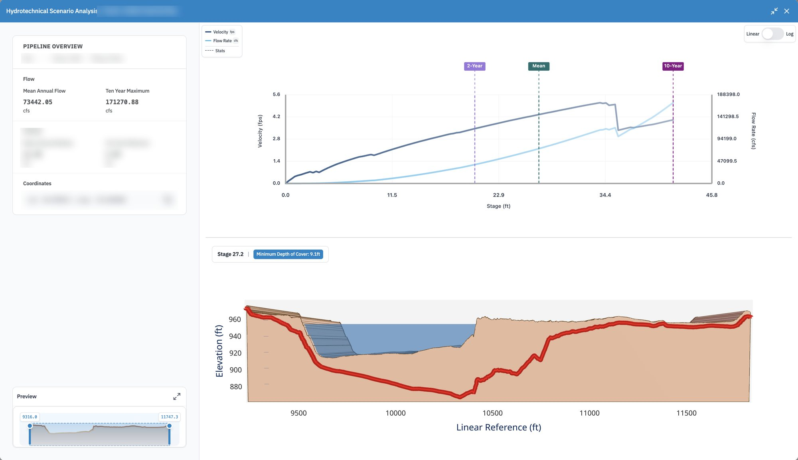
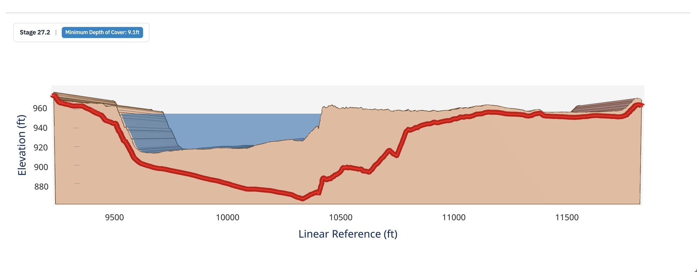

Industry work · pipeline integrity · US river crossings
Hydrotechnical Dashboard
Where a pipeline runs under a river: how high the water gets, and how much ground is left over the pipe when it does.
- Company
- Earthbound AI, which models natural hazards for pipeline operators
- Role
- GIS engineer, primary developer
- Years
- 2025–2026
- Stack
- React · Mapbox GL · FastAPI · DuckDB · GeoParquet on S3

One real crossing. The crossing's name, line, river and coordinates are blurred.
The brief
A pipe under a river is only as safe as the ground above it
Pipelines cross thousands of rivers, buried under the bed. In a flood the water rises, runs faster and can scour the bed away, and if enough of it goes the pipe is left exposed. Operators need to know which crossings come close, before the flood rather than after.
Earthbound models every crossing in the network. The dashboard is where an engineer reads those models: find a crossing on the map, open it, and see what happens to it as the water rises. I was the primary developer, on the web app and on the services that feed it.
01 · Scenario analysis
Raise the water, watch the cover
The top chart is the river's rating: how much water flows, and how fast, at each water level. Three levels are marked, the mean annual flow, the two-year flood and the ten-year maximum. Pick a level and the cross-section below fills to it, with the ground, the channel and the pipe drawn along the crossing. The badge reads off the shallowest cover left over the pipe at that level.
- The preview strip at the bottom left zooms the cross-section to any stretch of the crossing
- Linear or log scales for the rating chart, since flows span a few orders of magnitude

At 27.2 feet of water, between the mean and the ten-year flood, the shallowest cover over the pipe is 9.1 feet.
Making it hold up
Only what is on screen
The crossings, their models and the network behind them live as GeoParquet files on S3. Rather than loading a database, small FastAPI services query those files with DuckDB and send back only what is inside the map view, so panning across the country stays quick. Caching the heaviest tables brought the API's cold start down to about a second.
- Crossing mapweb app
- Scenario analysisweb app
- Cross-sectionsweb app and API
- Spatial queriesFastAPI and DuckDB